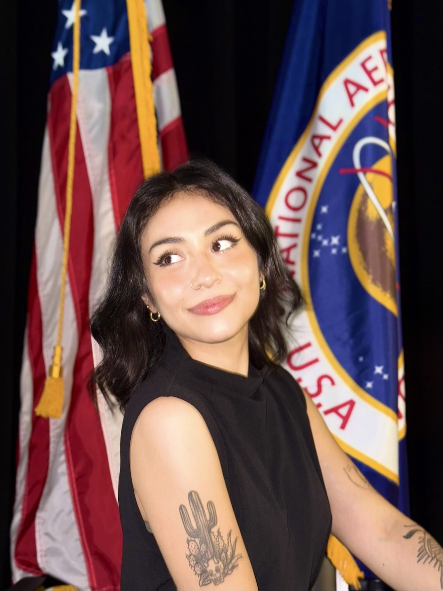

About Me
I'm Gala Cassiel Solis, a PhD candidate at Carnegie Mellon University researching advanced in-situ monitoring techniques for metal additive manufacturing processes. My work focuses on melt pool thermography for closed-loop process control of WAAM systems, with an emphasis on enhancing mechanical performance and reducing defects. I’ve collaborated with NASA, the Army Research Lab, and industry partners to translate research into applied aerospace manufacturing.
My Resume
 -->